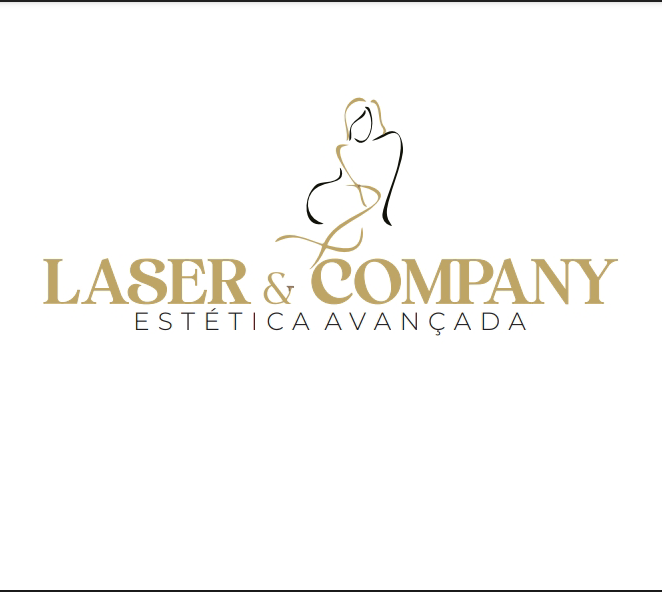
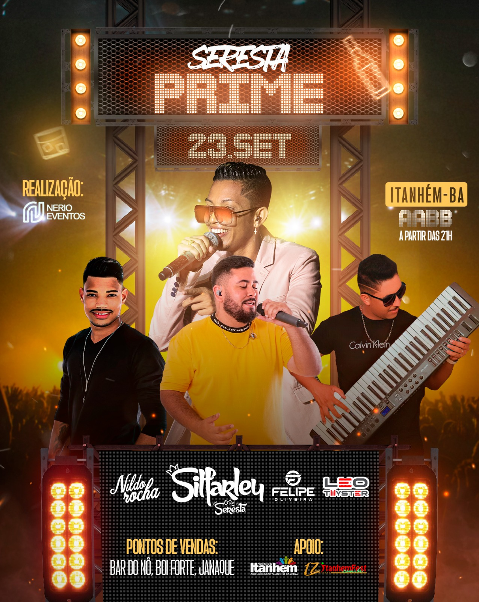
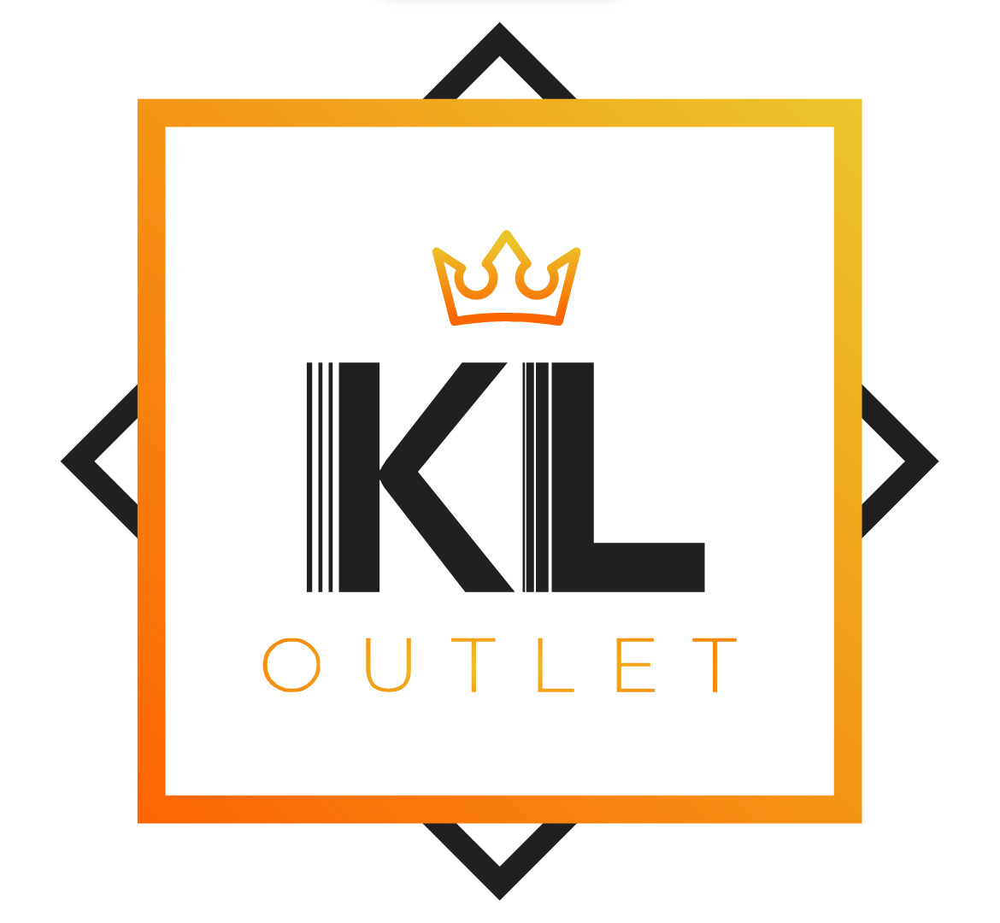
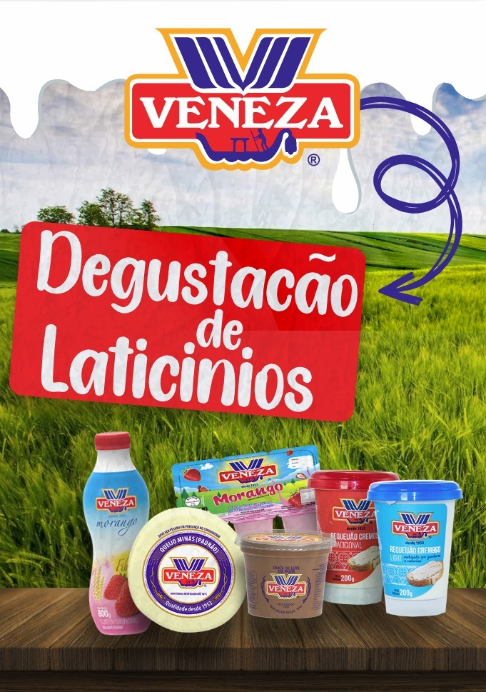

Bem-Vindos a Anthrax Designs, onde a criatividade encontra a funcionalidade, e as ideias se transformam em realidade!
SOLICITAR ORÇAMENTO
Motion design
É uma forma de design gráfico que se concentra em criar elementos visuais em movimento, geralmente para uso em mídia digital, como vídeos, animações, sites interativos e outros meios de comunicação multimídia.
Gestão Digital
concentra na administração e coordenação de recursos e atividades para promover o bem-estar social, atender às necessidades da comunidade e abordar questões sociais.
Design Social Midia
processo de criação e otimização de conteúdo visual (imagens, gráficos, vídeos etc.) para serem compartilhados e exibidos em plataformas de mídia social, comj Facebook, Instagram, Twitter, LinkedIn e muitas outras.
PORTIFOLIO
Laser Company

Seresta Prime

KL Outlet

Veneza

SOBRE NOS
CURIOSIDADES
Na AnthraxDesign, nossa paixão é transformar ideias em realidade por meio de design criativo e inovador. Somos uma agência de design dedicada a ajudar empresas e indivíduos a se destacarem no mercado por meio de soluções visuais de classe mundial.
NOSSA ABORDAGEM
a criatividade é o cerne de tudo o que fazemos. Nossa equipe é composta por designers talentosos e experientes que não apenas entendem as tendências atuais, mas também sabem como quebrar paradigmas para criar algo verdadeiramente original. Valorizamos a colaboração com nossos clientes, entendendo profundamente suas necessidades e visões para oferecer soluções personalizadas e impactantes.
NOSSOS CLIENTES
Atendemos uma diversidade de clientes, desde pequenas empresas até grandes corporações, startups promissoras e indivíduos com projetos criativos. Cada cliente é único, e adaptamos nossos serviços para atender às suas necessidades específicas.